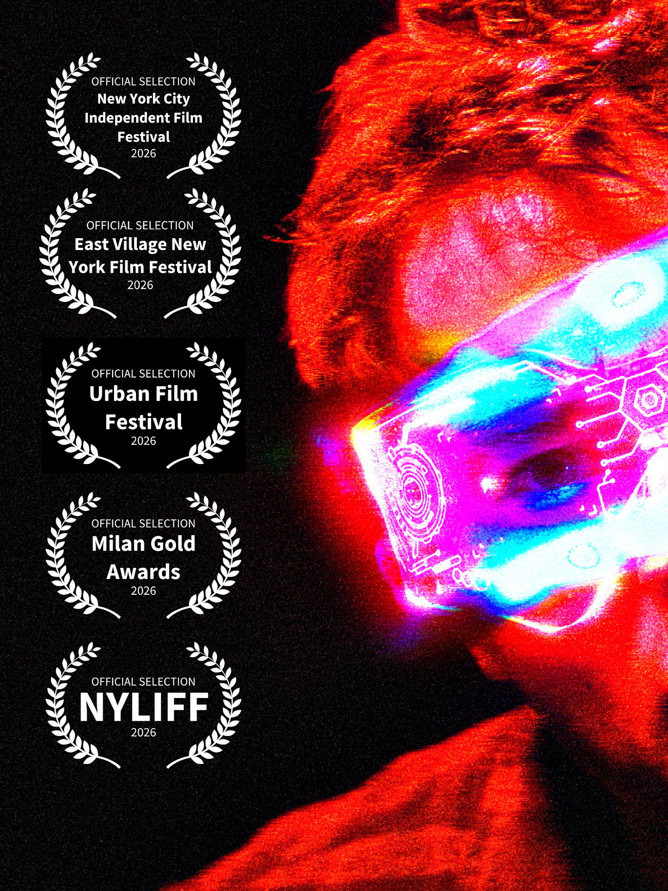
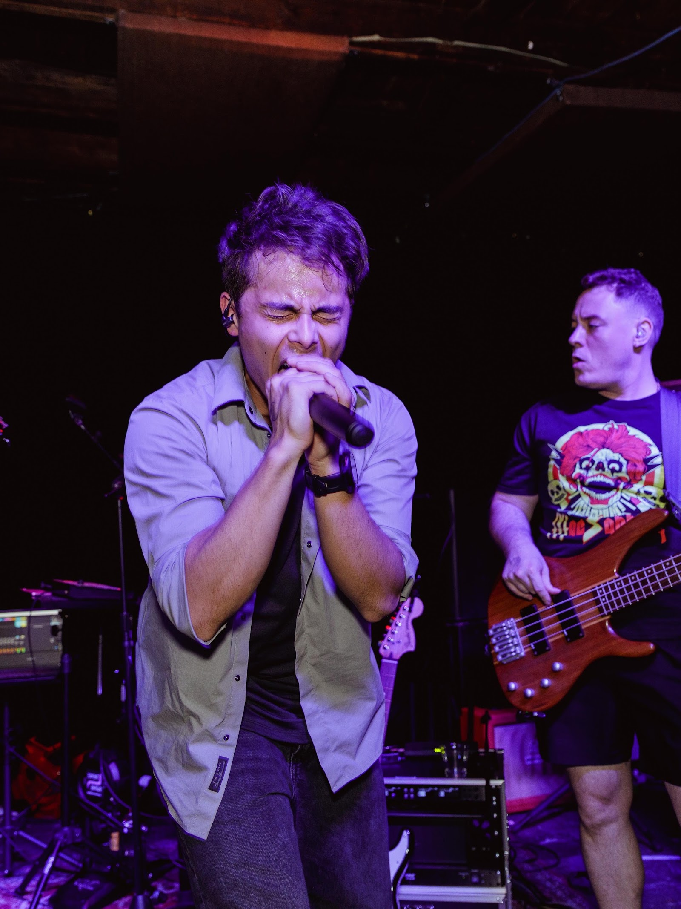
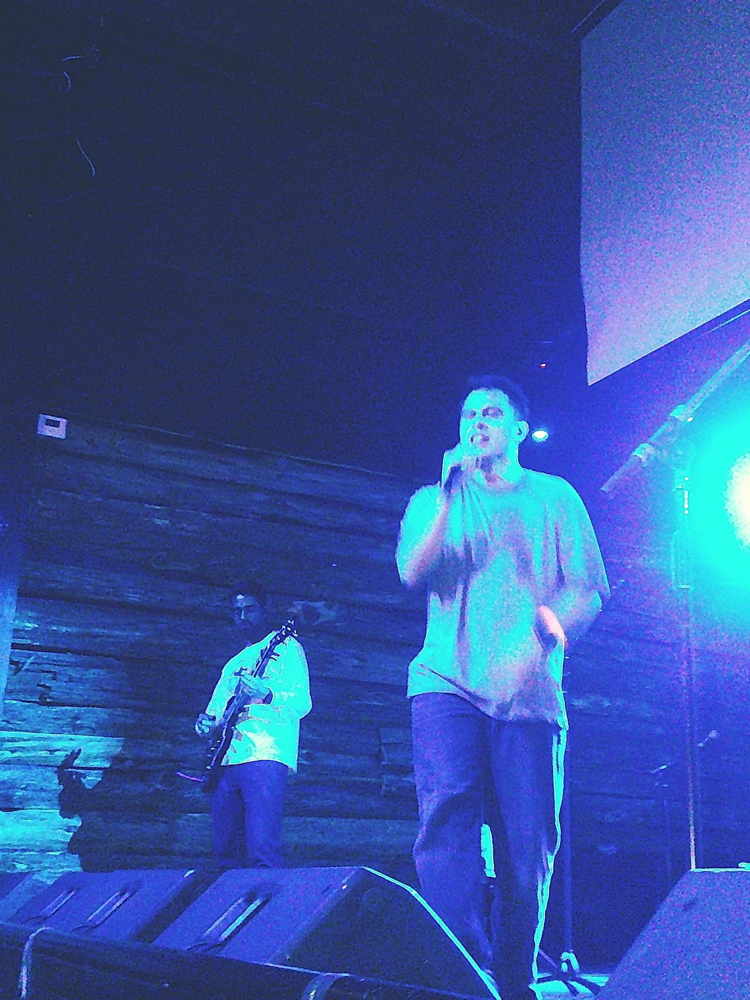
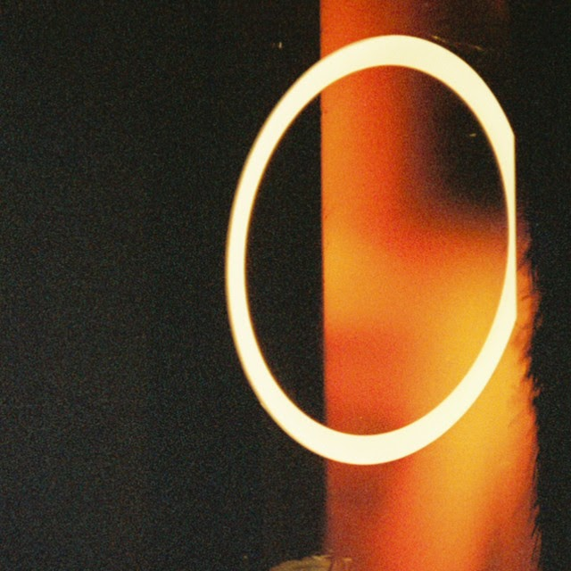
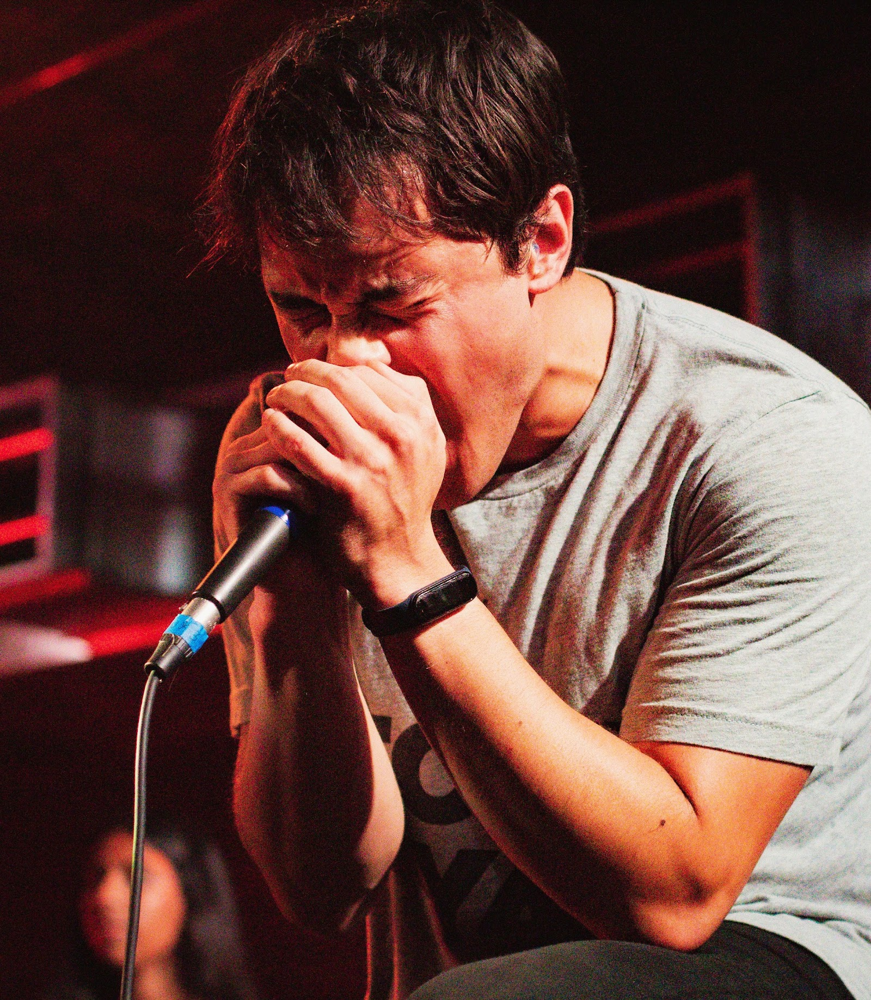

Original music project
Wave Station
Wave Station is my original music project: an independent rock and alternative act from New York City, born in Texas. It pairs driving rock instrumentation with rap-inflected vocals and big hooks, and it's where I make the music I want to make.
Running Out of Time
The 2025 album, ten songs. Listen on Spotify
DEADLIER WEAPON - Official Video
Made with a team of talented Texas filmmakers.
GUILTY (Official Music Video)
Tunnel Vision - Wave Station Remix (Official Visualizer)




